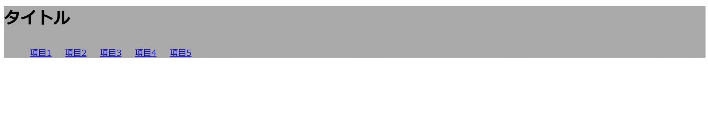
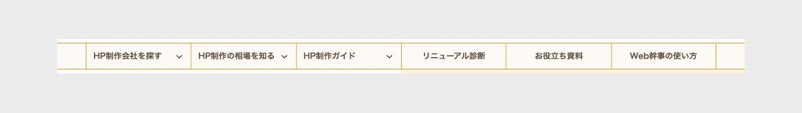
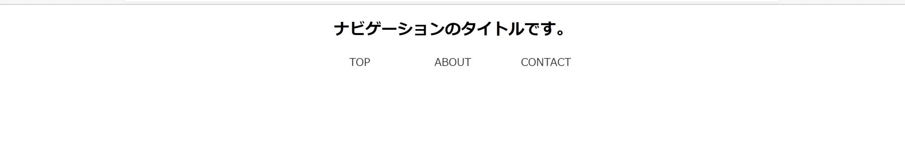
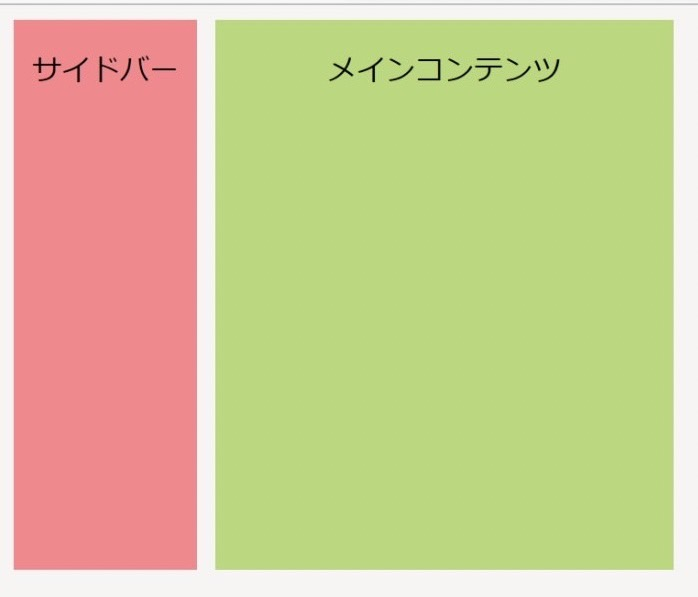
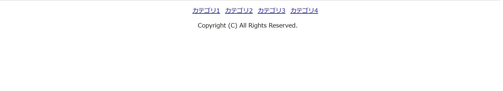

ホームページに用いられるパーツの名称
ホームページのレイアウトを考える上で、ホームページ内に用いられるパーツの種類と名称を知っておくことが重要です。誤った名称で伝えてしまうと、コミュニケーションのすれ違いが発生してしまうため、しっかりと把握しておきましょう。
ヘッダー

どのページにも共通で設置し、サイトのロゴやお問い合わせ・資料請求のボタンなどの重要なアクションを促すものが配置されることが多いパーツです。ユーザーがサイトを開いた際に、最初に見る部分なので、第一印象として最も重要な役割を果たします。スクロールしても常に表示しておく「固定ヘッダー」のようなテクニックもあります。
ヘッダーの作り方
<!DOCTYPE html>
<html lang="en" dir="ltr">
<head>
<meta charset="utf-8">
<title>ヘッダーサンプル</title>
<link rel="stylesheet" href="header.css">
</head>
<body>
<header>
<h1 class="title">タイトル</h1>
<nav class="nav">
<ul class="menu-group">
<li class="menu-item"><a href="#">項目1</a></li>
<li class="menu-item"><a href="#">項目2</a></li>
<li class="menu-item"><a href="#">項目3</a></li>
<li class="menu-item"><a href="#">項目4</a></li>
<li class="menu-item"><a href="#">項目5</a></li>
</ul>
</nav>
</header>
</body>
</html>
html
- header要素でヘッダとなるコンテンツを表します。(headerタグとheadタグは別物なので注意！)
- h1タグを使ってサイト名を表示させます。
- navタグを使ってナビゲーションを設置します。
- ulタグ(箇条書き)・liタグ(リスト内容)を使ってナビメニューの項目を追加します。
→その後ブラウザで確認
header{
display: flex;
width:100%;
height:100px;
background-color: darkgrey;
align-items: center;
}
.title{
margin-right: auto;
}
.menu-item{
list-style: none;
display: inline-block;
padding: 10px;
}
css
- 「display:flex」で、要素を横並びにします。
- 「align-items:center」で。ヘッダー内要素の上下幅をセンタリングします。
- タイトルだけを左端に移動させるために、「margin-right:auto」と設定します。
- リストタグはデフォルトで「・」などのマーカー文字が先頭に表示されるため、「list-style:none」を指定して表示しないよう設定しています。
- 「display:inline-box」で、メニュー項目を横並びで表示させます。
ヘッダー完成例

ナビゲーション

人によって「メニュー」と呼ぶこともあります。開発用語では「ナビゲーション」が一般的になります。大きな目次を「グローバルナビゲーション」、小さな目次を「サブナビゲーション」と呼びます。ユーザーを目的のコンテンツに誘導することや、検索エンジンににアピールすることができます。
ナビゲーションの作り方
<!DOCTYPE html>
<html lang="en" dir="ltr">
<head>
<meta charset="utf-8">
<title>ナビゲーションサンプル</title>
<link rel="stylesheet" href="navigation.css">
</head>
<nav>
<h2>ナビゲーションのタイトルです。</h2>
<ul>
<li><a href=”#”>TOP</a></li>
<li><a href=”#”>ABOUT</a></li>
<li> <a href=”#”>CONTACT</a></li>
</ul>
</nav>
<body>
</body>
</html>
html
- nav要素で主要なナビーションのセクションを表します。
(ナビゲーションセクションの例としてメニュー・目次などがある) - h2タグを使ってサイト名を表示させます。
- ulタグ(箇条書き)・liタグ(リスト内容)を使ってナビメニューの項目を追加します。
nav {
text-align: center;
}
nav ul {
margin: 0 ;
padding: 0 ;
}
nav ul li{
list-style: none;
display: inline-block;
width: 10%; /* ここで項目の幅を指定します */
}
nav ul li a {
text-decoration: none;
color: #333;
}
css
- リストタグはデフォルトで「・」などのマーカー文字が先頭に表示されるため、「list-style:none」を指定して表示しないよう設定しています。
- 「display:inline-blockで、改行を入れることなく、横にメニュー要素を並べることができます。
- 「text-decoration:none」 で、テキストの装飾を行わないことを表します。
ナビゲーション完成例

コンテンツ
ページ内のメインとなる要素の部分です。基本的にホームページの訪問者はこの内容を目当てに来るので、コンテンツが見えやすいようにヘッダーやナビゲーションを一時的に隠すこともあります。
サイドバー
コンテンツの隣に、カテゴリ一覧や関連の記事一覧、広告バナーなどを設置したりする際にとるエリアをサイドバーと呼んでいます。サイドバーを設置するとユーザーはサイドバーから知りたい情報に簡単に辿り着くことができます。また問い合わせのフォームなどと合わせることによって、ユーザーによる商品購入や資料請求などの行動に繋げることができます。
サイドバーの作り方
<!DOCTYPE html>
<html lang="en" dir="ltr">
<head>
<meta charset="utf-8">
<title>サイドバーサンプル</title>
<link rel="stylesheet" href="sidebar.css">
</head>
<body>
<article>
<div class="side">
<p>サイドバー</p>
</div>
<div class="content">
<p>メインコンテンツ</p>
</div>
</article>
</body>
</html>
html
- サイドバーとメインコンテンツ部分をdivタグで囲みます。(divではなくarticleやasideでも良い)
body {
font-family:'Noto Sans JP',sans-serif;
background-color:#f6f5f4;
}
.side {
background-color:#ff838b;
width:100px;
height:300px;
text-align:center;
}
.content {
background-color:#b3d874;
width:250px;
height:300px;
text-align:center;
margin-left:10px;/*サイドバーとメインコンテンツの間に隙間 をあけた*/
}
article {
display:flex;/*サイドバーとメインコンテンツを横並びにする 指定をした*/
}
css
- 親要素を作って「display:flex;」と書いて要素を横並びにします。(親要素を作らなければうまく動作しません)
- サイドバーとメインコンテンツの隙間のスペースは、marginの値を調節することでレイアウトを整えることができます。
- 親要素に「display:flex;」を指定し、固定して追従させたい箇所に、CSSで「position: sticky」とコーディングすれば、サイドバーを固定することができます。
サイドバー完成例

フッター

ページの一番下にあるコピーライトなどを記載する箇所をフッターと呼びます。 フッター内にナビゲーションを設置することもあり、それをフッターナビゲーションと呼びます。 ここに企業情報や運営元などをしっかり書くことで、コンテンツの信頼性をアピールするということもあります。
フッターの作り方
<!DOCTYPE html>
<html lang="en" dir="ltr">
<head>
<meta charset="utf-8">
<title>フッターサンプル</title>
<link rel="stylesheet" href="footer.css">
</head>
<body>
<footer id="footer">
<ul>
<li><a href="cat1/index.html">カテゴリ1</a></li>
<li><a href="cat2/index.html">カテゴリ2</a></li>
<li><a href="cat3/index.html">カテゴリ3</a></li>
<li><a href="cat4/index.html">カテゴリ4</a></li>
</ul>
<p>Copyright (C) All Rights Reserved.</p>
</footer>
</body>
</html>
html
- フッターを作るには、footerタグを使用します。
- フッターはbodyの終了タグの直前に書くことによって、コンテンツの最後尾に表示できます。
#footer {
border-top: solid 1px lightgray;
padding-bottom: 10px;
}
#footer ul {
text-align: center;
}
#footer ul li {
padding: 0 4px;
display: inline;
}
#footer p {
text-align: center;
}
css
- display:inlineは、li要素を横に並べて表示するようになります。
- #footer ulでdisplay:flexと宣言してフレックスボックスを利用しても、同様に横に並べて表示できますが、text-align:centerが効かなくなります。そのため、marginやjustify-content:center(フレックスアイテムを中央寄せ)などで調整する必要があります。
フッター完成例
